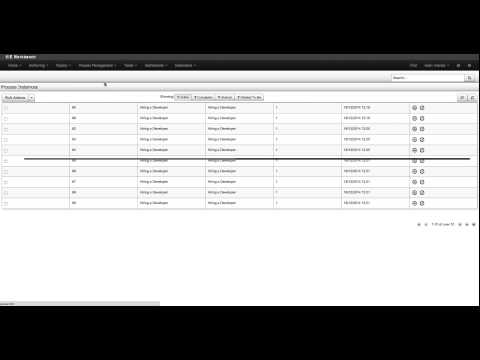

Keep your jBPM environment healthy
Once jBPM is deployed to given environment and is up and running most of actual maintenance requirements come into the picture. Running BPM deployment will have different maintenance life cycle depending on the personas involved:
- business users would need to make sure latest versions of processes are in use
- administrators would need to make sure that entire infrastructure is healthy
- developers would need to make sure all projects are available to their systems
In this article I’d like to focus on administrators to give them a bit of power to maintain jBPM environments in a easier way. So let’s first look at what sort of thing they can be interested with….
jBPM when configured to use persistence will store its state into data base over JPA. That is regardless if jbpm-console/kie-wb is used or jBPM runs in embedded mode. Persistence can be divided into two sections:
- runtime data – current state of active instances (processes, tasks, jobs)
- audit data – complete view of all states of instances (processes, tasks, events, variables)
Above diagram presents only subset of data model for jBPM and aims at illustrating important parts from maintenance point of view.
Important information here is that “runtime data” is cleaned up automatically on life cycle events:
- process instance information will be removed upon process instance completion
- work item information will be removed upon work item completion
- task instance information (including content) will be removed upon completion of a process instance that given tasks belongs to
- session information clean up depends on the runtime strategy selected
- singleton – won’t be removed at all
- per request will be removed as soon as given request ends
- per process instance – will be removed when process instance mapped to given session completes (or aborts)
- executor’s request and error information is not removed
So far so good, we have cleanup procedure in place but at the same time we loose all trace of process instances being executed at all. In most of the case this is not an acceptable solution…
And because of that there are audit data tables available (and used by default) to keep trace of what has been done, moreover it does keep track of what is happening in the environment as well. So it is actually great source of information in any given point in time. Thus name audit data might be slightly misleading … but don’t worry it is the first class citizen and is actually used by jbpm services to provide you with all the details about current view on past and present.
So that puts us in tight spot – that data is gathered in audit tables but we do not have control over how long would that be stored in these tables. In environments that do operate on large number of process instances and task instances this might be seen as a problem. To help with this maintenance burden a clean up procedure has been provided (from version 6.2) that will allow two approaches to the topic:
- automatic clean up as scheduled job running in background on defined intervals
- manual clean up by taking advantage of the audit API
LogCleanupCommand
LogCleanupCommand is jbpm executor command that consists of logic to clean up all (or selected) audit data automatically. That logic is simply taking advantage of audit API to clean it up but provides one significant benefit – it can be scheduled and executed repeatedly by using reoccurring jobs feature of jbpm executor. Essentially this means that once job completes it provides information to the jbpm executor if and when next instance of this job should be executed. By default LogCleanupCommand is executed one a day from the time it was scheduled for the first time. It of course can be configured to run on different intervals.
NOTE: LogCleanupCommand is not registered to be executed out of the box to do not remove data without explicit request so it needs to be started as new job, see short screen cast on how to do it.
LogCleanupCommand comes with several configuration options that can be used to tune the clean up procedure.
| Name | Description | Is exclusive |
|---|---|---|
| SkipProcessLog | Indicates if clean up of process instance, node instance and variables log cleanup should be omitted (default false) | No, can be used with other parameters |
| SkipTaskLog | Indicates if task audit and task event logs cleanup should be omitted (default false) | No, can be used with other parameters |
| SkipExecutorLog | Indicates if jbpm executor entries cleanup should be omitted (default false) | No, can be used with other parameters |
| SingleRun | Indicates if the job should run only once default false | No, can be used with other parameters |
| NextRun | Date for next run in time expression e.g. 12h for jobs to be executed every 12 hours, if not given next job will run in 24 hours from time current job completes | No, can be used with other parameters |
| OlderThan | Date that logs older than should be removed – date format YYYY-MM-DD, usually used for single run jobs | Yes, cannot be used when OlderThanPeriod is used |
| OlderThanPeriod | Timer expression that logs older than should be removed – e.g. 30d to remove logs older than 30 day from current time | Yes, cannot be used when OlderThan is used |
| ForProcess | Process definition id that logs should be removed for | No, can be used with other parameters |
| ForDeployment | Deployment id that logs should be removed for | No, can be used with other parameters |
| EmfName | Persistence unit name that shall be used to perform delete operations | N/A |
Another important aspect of the LogCleanupCommand is that it protects the data it removes by making sure it won’t delete active instances such as still running process instances, task instance or executor jobs.
NOTE: Even though there are several options to use to control what data shall be removed, recommended is to always use date as all audit data tables do have timestamp while some do not have other parameters (process id or deployment id). 
A short screencast shows how LogCleanupCommand can be used in practice. It shows to scenarios (two execution of a command) where both are just single run:
- first that attempts to remove everything that is older than 1 day
- second that removes everything that is older than current time – not parameter for date is given
For the first run we only see that one job has been removed as only that met the criteria to be older than 1 day and all other was started same day. Then the second run that removes everything that was completed did actually removed them as expected.
Manual cleanup via audit API
Instead of having automatic cleanup of jobs, administrators can make use of audit API to do the clean up manually with more control over parameters to control what is to be removed. Audit API is divided in three areas (same as shown on the diagram) that covers different parts of the environment:
- process audit to clean up process, node and variables logs via jbpm-audit module
- task audit to clean up tasks and task events via jbpm-human-task-audit module
- executor jobs to cleanup jbpm executor jobs and errors via jbpm-executor module
API cleanup support is done in hierarchical way so in case all needs to be cleaned up it’s enough to take the last audit service from hierarchy and all operations will be available.
- org.jbpm.process.audit.JPAAuditLogService
- org.jbpm.services.task.audit.service.TaskJPAAuditService
- org.jbpm.executor.impl.jpa.ExecutorJPAAuditService
Example 1 – remove completed process instance logs
JPAAuditLogService auditService = new JPAAuditLogService(emf);
ProcessInstanceLogDeleteBuilder updateBuilder = auditService.processInstanceLogDelete().status(ProcessInstance.STATE_COMPLETED);
int result = updateBuilder.build().execute();
Example 2 – remove task audit logs for deployment org.jbpm:HR:1.0
TaskJPAAuditService auditService = new TaskJPAAuditService(emf);
AuditTaskInstanceLogDeleteBuilder updateBuilder = auditService.auditTaskInstanceLogDelete().deploymentId("org.jbpm:HR:1.0");
int result = updateBuilder.build().execute();
Example 3 – remove executor error and requests
ExecutorJPAAuditService auditService = new ExecutorJPAAuditService(emf);
ErrorInfoLogDeleteBuilder updateBuilder = auditService.errorInfoLogDeleteBuilder().dateRangeEnd(new Date());
int result = updateBuilder.build().execute();
RequestInfoLogDeleteBuilder updateBuilder = auditService.requestInfoLogDeleteBuilder().dateRangeEnd(new Date());
result = updateBuilder.build().execute();
NOTE: when removing jbpm executor entries make sure first error info is removed before request info can be removed due to constraints setup on data base.
See API for various options on how to configure cleanup operations:
- AuditTaskInstanceLogDeleteBuilder
- ErrorInfoLogDeleteBuilder
- NodeInstanceLogDeleteBuilder
- ProcessInstanceLogDeleteBuilder
- RequestInfoLogDeleteBuilder
- TaskEventInstanceLogDeleteBuilder
- VariableInstanceLogDeleteBuilder
Equipped with these features jBPM environment can be kept clean and healthy for long long time without much effort.
Ending always same way – feedback is more than welcome.

{kind=link}